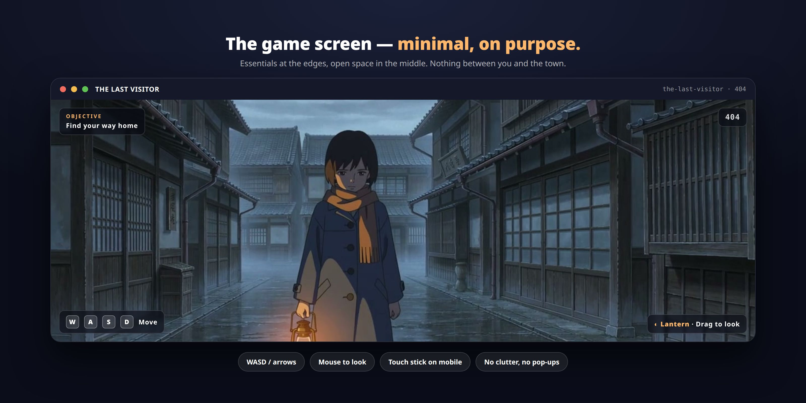
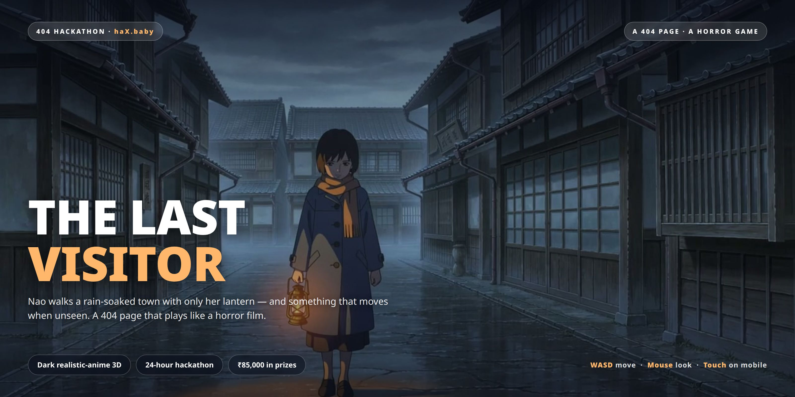
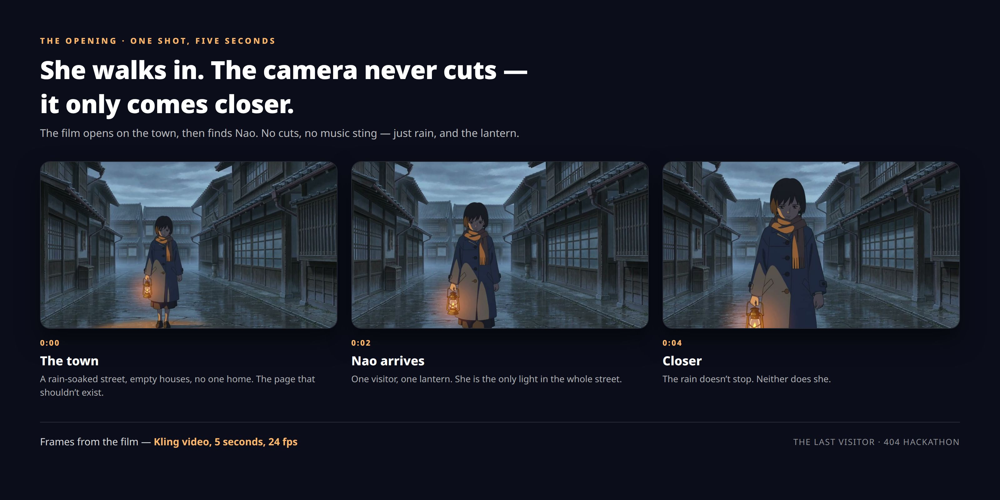
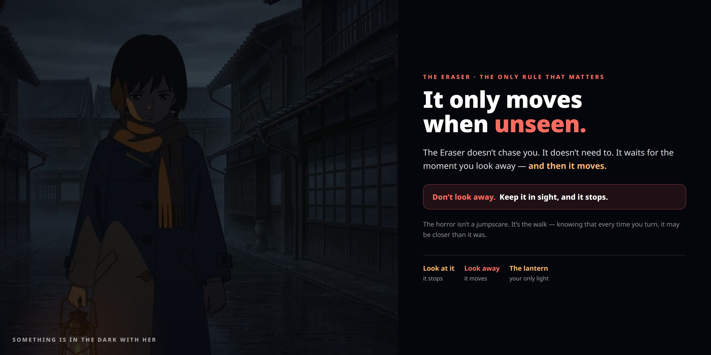
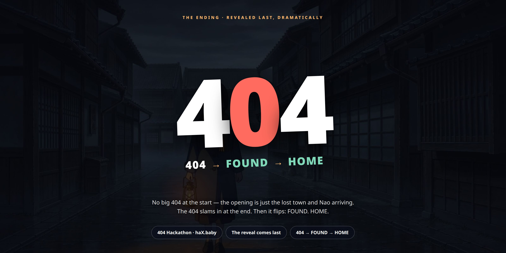
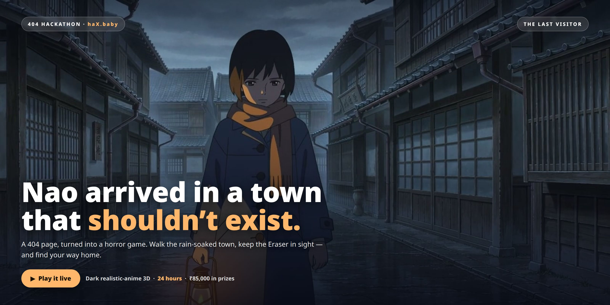
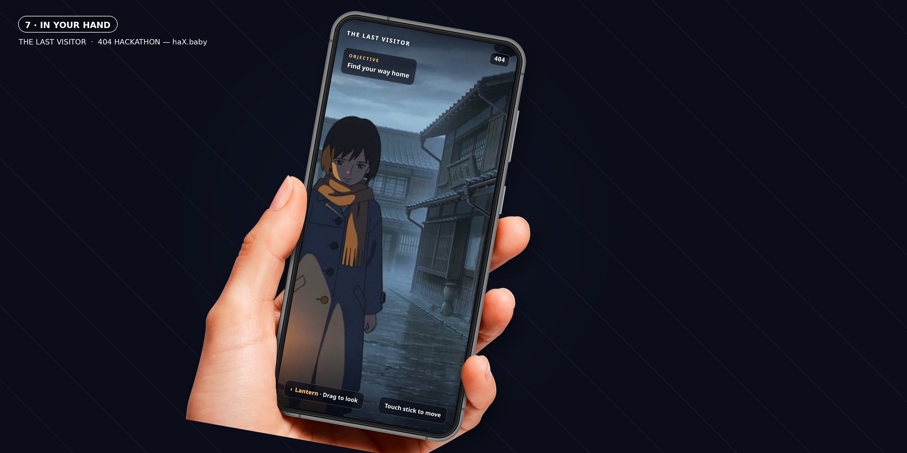

The Last Visitor
A 404 page that plays like a horror film. Nao walks a rain-soaked town with only her lantern — and something that moves when unseen.
Who this is for: players and judges at the 404 Hackathon by haX.baby — and anyone who has ever landed on a dead link.

A dead link is a dead end. This one plays instead.
A 404 page is where visitors land when something is missing. Most of them just say so and stop. This one was built for the 404 Hackathon by haX.baby: the missing page is a rain-soaked town, and the visitor is Nao — a girl with a lantern, walking home through streets that shouldn’t exist.
Three steps
Arrive in the town
The film opens on the rain-soaked street, then finds Nao. One shot, five seconds, no cuts — the camera only comes closer.
Walk, and watch
WASD or arrows to move, mouse to look, a touch stick on mobile. The Eraser only moves when unseen — keep it in sight and it stops.
Find your way home
The 404 slams in at the end, then flips: FOUND. HOME.
Built to be felt, not just seen
The 404 comes last
No big 404 at the start. The opening is just the lost town and Nao arriving — the reveal lands at the end, dramatically.
One rule for the monster
The Eraser only moves when unseen. Look at it and it stops; look away and it moves. The horror is the walk, not a jumpscare.
A minimal screen, on purpose
Essentials at the edges, open space in the middle. Objective, 404, lantern and touch controls — nothing between you and the town.
A dead link you can actually play.
Built in 24 hours for the 404 Hackathon by haX.baby. Playable in the browser — keyboard, mouse and touch.
Screens

The case, in pictures
The whole story, picture by picture — the town, the game, the Eraser, and the 404 that flips to FOUND.






More projects
Other things I’ve built — scroll through the rest.


Want something like this?
Tell me about your project. I reply within one working day.